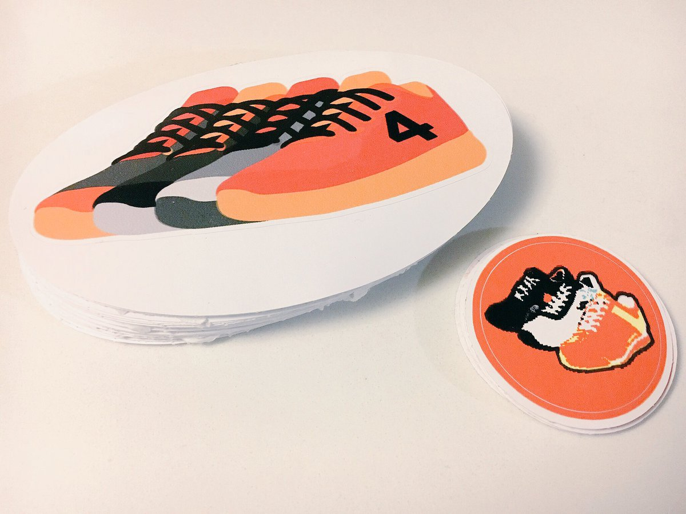

  	<div class="flex-wrap">
      
  	  <article class="tweet  " id="main">
  	    <p class="full_text">
  	      Hey #rubyconf ! Do you like stickers? Like @shoooesrb? Catch me for your Shoes stickers! <div class="gallery"><ul><li><a href="../../tweets_media/931240016096964609-DOxt2qTUEAEUmfz.jpg"></a></li></ul></div>
  	    </p>
  	    <p class="created_at">
  	      11/16/2017, 11:18:16 AM
  	    </p>
  	    <p class="favorite_count">Favs: 1</p>
  	    <p class="retweet_count">Retweets: 0</p>
  	    <a class="permalink" href="../931240016096964609">link</a>
  	  </article>

  	</div>
  </div>
